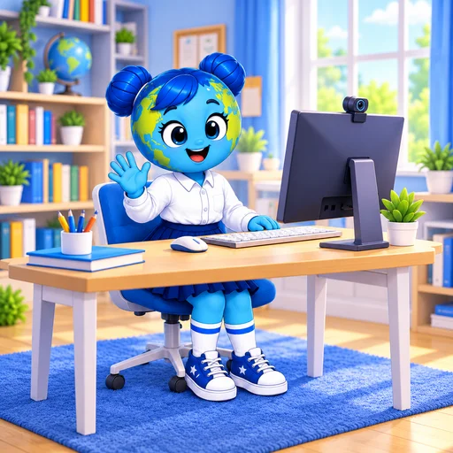

Уроки інформатики для дітей 7–10 років
Вчись користуватися комп’ютером та інтернетом
Короткі пояснення, ігри та вправи допоможуть пригадати знайоме й навчитися нового. Навчайся разом із Юджі та Юною у своєму темпі.
Почнемо з уроку про вибір пристрою для потрібної справи.
Батькам і вчителям: як працюють уроки
Що робитимемо на уроці?
Розберімося
Подивись відео або розглянь приклади.
Потренуйся
Обирай вправи, сортуй, шукай слова й малюй.
Перевір себе
Виконай підсумкове завдання самостійно.
Усе на одній сторінці. Можна повернутися до пояснення, повторити вправу або зробити перерву.
Чого хочеш навчитися?
Обери тему або почни з першого уроку. Усього тут 16 уроків.
Переглянути уроки 16 уроків у чотирьох темах
Мої суперсили
Уже виходить: 0 / 16